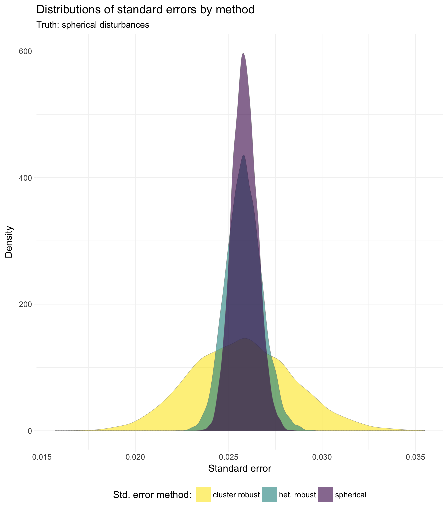

Section 11: IV
Admin
Announcements
- Change in time for office hours this week—still Friday but with different times:
- Friday from 11am–12pm in Giannini 234
- Friday from 2:30pm–3:30pm in Giannini 236
- If you really like instrumental variables: Pat Kline (Berkeley econ.) is presenting an instrumental-variables related paper this week (Thursday, 2pm–3:30pm in Evans 648): Episode IV: A New Hope.
Last section
In our previous section we (again) discussed standard errors. Specifically, we discussed the various assumptions that we use to generate our standard errors and common violates of these assumptions… and how we can calculate standard errors that are robust to some of these violations.
Follow up
In our previous section, someone asked what happens when we calculate cluster-robust standard errors—standard errors that allow for intra-cluster correlation of the disturbances—when in reality the disturbances are independent.1 I wrote up some code to simulate this scenario. Note: I use a new package here (data.table). It is one of my go-to packages, but it has a syntax that is a bit different from all the packages we’ve covered thus far. Check out the vignette or the Github repository—they are quite helpful. In addition, Hadley Wickham is working on a package dtplyr that provides a “data.table backend for dplyr”.
I think the sim_fun() function below is pretty cool:2 you can give sim_fun() any within-cluster variance covariance matrix (the var_cov argument), and it will run the simulation based upon that within-cluster relationship.
# General setup ----
# Options
options(stringsAsFactors = F)
# Packages
library(data.table)## data.table 1.10.0## **********
## This installation of data.table has not detected OpenMP support. It will still work but in single-threaded mode.
## **********## The fastest way to learn (by data.table authors): https://www.datacamp.com/courses/data-analysis-the-data-table-way## Documentation: ?data.table, example(data.table) and browseVignettes("data.table")## Release notes, videos and slides: http://r-datatable.com## -------------------------------------------------------------------------## data.table + dplyr code now lives in dtplyr.
## Please library(dtplyr)!## -------------------------------------------------------------------------
## -------------------------------------------------------------------------## data.table + dplyr code now lives in dtplyr.
## Please library(dtplyr)!## -------------------------------------------------------------------------
## -------------------------------------------------------------------------## data.table + dplyr code now lives in dtplyr.
## Please library(dtplyr)!## -------------------------------------------------------------------------
## -------------------------------------------------------------------------## data.table + dplyr code now lives in dtplyr.
## Please library(dtplyr)!## -------------------------------------------------------------------------
## -------------------------------------------------------------------------## data.table + dplyr code now lives in dtplyr.
## Please library(dtplyr)!## -------------------------------------------------------------------------
## -------------------------------------------------------------------------## data.table + dplyr code now lives in dtplyr.
## Please library(dtplyr)!## -------------------------------------------------------------------------
## -------------------------------------------------------------------------## data.table + dplyr code now lives in dtplyr.
## Please library(dtplyr)!## -------------------------------------------------------------------------
## -------------------------------------------------------------------------## data.table + dplyr code now lives in dtplyr.
## Please library(dtplyr)!## -------------------------------------------------------------------------
## -------------------------------------------------------------------------## data.table + dplyr code now lives in dtplyr.
## Please library(dtplyr)!## -------------------------------------------------------------------------
## -------------------------------------------------------------------------## data.table + dplyr code now lives in dtplyr.
## Please library(dtplyr)!## -------------------------------------------------------------------------
## -------------------------------------------------------------------------## data.table + dplyr code now lives in dtplyr.
## Please library(dtplyr)!## -------------------------------------------------------------------------library(magrittr)
library(MASS)
library(lfe)## Loading required package: Matrixlibrary(parallel)
library(ggplot2)## Use suppressPackageStartupMessages() to eliminate package startup
## messages.library(viridis)
# My ggplot2 theme
theme_ed <- theme(
legend.position = "bottom",
panel.background = element_rect(fill = NA),
# panel.border = element_rect(fill = NA, color = "grey75"),
axis.ticks = element_line(color = "grey95", size = 0.3),
panel.grid.major = element_line(color = "grey95", size = 0.3),
panel.grid.minor = element_line(color = "grey95", size = 0.3),
legend.key = element_blank())
# Function: Generate data ----
sim_fun <- function(i, n_g, g, var_cov, beta) {
# Start creating the dataset: generate X
sim_dt <- data.table(x = rnorm(n_g * g))
# Generate the disturbances (in vector form)
sim_dt[, v := mvrnorm(n = g, mu = rep(0, n_g), Sigma = var_cov) %>%
# Rows are for a single cluster, so we transpose
t() %>% c()]
# Calcualte y; add group ID
sim_dt[, `:=`(
y = beta[1] + beta[2] * x + v,
group_id = rep(1:g, each = n_g)
)]
# Spherical-error inference
est_sph <- felm(y ~ x, data = sim_dt) %>%
summary() %>% coef() %>% extract(2, 1:3)
# inference
est_het <- felm(y ~ x, data = sim_dt) %>%
summary(robust = T) %>% coef() %>% extract(2, 1:3)
# Cluster-robust inference
est_cl <- felm(y ~ x | 0 | 0 | group_id, data = sim_dt) %>%
summary() %>% coef() %>% extract(2, 1:3)
# Results data.table
res_dt <- data.table(rbind(est_sph, est_het, est_cl))
setnames(res_dt, c("est", "se", "t_stat"))
res_dt[, `:=`(
method = c("spherical", "het. robust", "cluster robust"),
iter = i)]
# Return results
return(res_dt)
}
# Simulation parameters ----
# Observations per group
n_g <- 30
# Number of groups
g <- 50
# Variance-covariance matrix (within a cluster)
var_cov <- diag(n_g)
# Define beta
beta <- c(12, 0)
# Set seed
set.seed(12345)# Run the simulation ----
sim_dt <- mclapply(X = 1:1e4, FUN = sim_fun,
n_g, g, var_cov, beta,
mc.cores = 4) %>% rbindlist()# Summary stats ----
sim_dt[, mean(se), by = method]## method V1
## 1: spherical 0.02584668
## 2: het. robust 0.02581745
## 3: cluster robust 0.02571905sim_dt[, median(se), by = method]## method V1
## 1: spherical 0.02583330
## 2: het. robust 0.02579634
## 3: cluster robust 0.02568337So we see that the means and medians of the three methods are quite close; what about the general distributions of the standard errors?
# Plot results ----
# Distribution of standard errors
ggplot(data = sim_dt, aes(x = se, fill = method)) +
geom_density(alpha = 0.6, size = 0.1, color = "grey50") +
xlab("Standard error") +
ylab("Density") +
ggtitle("Distributions of standard errors by method",
subtitle = "Truth: spherical disturbances") +
scale_fill_viridis("Std. error method:",
discrete = T, direction = -1) +
theme_ed
We see that while the means and medians are quite close, the distributions vary considerably in their tails.
To see this point from a different perspective, let’s plot pairs of standard errors, where the x-axis is the spherical error (correct in this simulation) and the y-axis is the cluster-robust standard error.
# Pairs of spherical and cluster-robust SE
pair_dt <- merge(
x = sim_dt[method == "spherical", list(se_sp = se, iter)],
y = sim_dt[method == "cluster robust", .(se_cl = se, iter)],
by = "iter")
# The plot
ggplot(data = pair_dt, aes(x = se_sp, y = se_cl)) +
geom_point(alpha = 0.3, size = 0.4) +
stat_smooth(method = "lm", se = F) +
xlab("Spherical S.E. (correct)") +
ylab("Cluster-robust S.E. (arbitrary clusters)") +
ggtitle("Comparing spherical and cluster-robust standard errors",
subtitle = "When disturbances are spherical") +
scale_fill_viridis("Std. error method:",
discrete = T, direction = -1) +
theme_ed +
coord_equal()
The reason for the strange dimensions in the plot here: I am forcing the axes to have equal units, which emphasizes the much greater dispersion of the cluster-robust standard errors. The best-fit (blue) line is quite close to the 45-degree line (omitted): the cluster-robust errors are consistent for the true (spherical) standard errors, but they add a lot of noise (due to the off-diagonal entries).
This week
This week we will discuss instrumental variables (IV)—one of the most frequently used tools of an applied econometrician.
What you will need
Packages:
- New:
- None!
- Old:
dplyr,lfe,magrittr,MASS
Instrumental variables
In the last few sections, we’ve discussed what happens when we violate the spherical errors assumption: our estimator for the standard errors (or variance-covariance matrix of the coefficients) is inconsistent.
This week, we think about what happens if we violate the strict exogeneity (or population orthogonality) assumption. Recall the strict exogeneity assumption
\[ \mathop{\boldsymbol{E}}\left[ \varepsilon_i | \mathbf{X} \right] = 0 \]
and the (weaker) population orthogonality assumption
\[ \mathop{\boldsymbol{E}}\left[ \mathbf{x}_i \varepsilon_i \right] = \boldsymbol{0} \]
When might violations of these assumptions arise? As you saw in class, the most common scenarios in which econometricians apply instrumental variables are
- omitted variables
- simultaneous equations
- measurement error in your covariates
Omitted variables problem
We first discussed the problem of omitted-variable bias (OVB) back in section 4 while thinking about the Frisch-Waugh-Lovell theorem. The good news: we now have a potential antidote: instrumental variables.
Let’s set up a simple framework for omitted-variable bias. Consider the data-generating process
\[ y = \beta_0 + \beta_1 x_1 + \beta_2 x_2 + \varepsilon \]
In order to keep things simple, we will assume \(x_1\) and \(x_2\) are uncorrelated with \(\varepsilon\). We will also assume \(x_1\) and \(x_2\) are correlated, \(\mathop{\text{Cov}} \left(x_1,\, x_2\right) \neq 0\), and \(\beta_i\neq 0\) for each \(i\). Finally, assume the researcher does not observe \(x_2\).
Why wouldn’t the researcher observe \(x_2\)—an obviously important variable? One reason is that we do not always know which variables predict \(y\) and correlate with other covariates. Another reason is that we do not always get all the data that we want. In either situation, we eventually end up with some variables in the regression and some variables left out.
So what happens if the researcher \(x_2\) and simply regresses \(y\) on \(x_1\) (and an intercept)?
\[ y = \theta_0 + \theta_1 x_1 + \nu \]
Will \(\theta_1\) (the coefficient on \(x_1\) in the regression that omits \(x_2\)) be equal to \(\beta_1\) (the coefficient on \(x_1\) i in the regression that does not omit \(x_2\))? Returning to our Frisch-Waugh-Lovell notes: no. Why? In the language of an econometrician: \(x_1\) is now endogenous—it is correlated with the error term.
How do we know \(x_1\) is correlated with the error term? We know this fact because \(\nu = \beta_2 x_2 + \varepsilon\) and because \(x_1\) and \(x_2\) are correlated (by assumption). In other (mathematical) words,
\[ \begin{aligned} \mathop{\text{Cov}} \left(x_1,\, \nu\right) &= \mathop{\text{Cov}} \left(x_1,\, \beta_2 x_2 + \varepsilon\right) \\ &= \beta_2 \mathop{\text{Cov}} \left(x_1,\, x_2\right) + \mathop{\text{Cov}} \left(x_1,\, \varepsilon\right) \\ &= \beta_2 \mathop{\text{Cov}} \left(x_1,\, x_2\right)\\ &\neq 0 \end{aligned}\]
Thus, our covariate is correlated with our disturbance, violating population orthogonality. What’s the big deal? We can no longer assume the OLS estimator for \(\boldsymbol{\beta}\) is consistent. Not good.
Omitted variables solution
So what do we do when we reach a point in our research where we believe we have a problem with an omitted variable? Find an instrument!3
What is an instrumental variable (IV)? An instrument is a variable that is correlated with the “good” (or “exogenous”) variation in \(x_1\) but is uncorrelated to the “bad” (or “endogenous” or “related-to-\(x_2\)”) variation in \(x_1\). More formally, an IV is a variable (we will call it \(z\)) that satisfies the following two properties:
- \(\mathop{\text{Cov}} \left(z,\, x_1 \right) \neq 0\)
- \(\mathop{\text{Cov}} \left(z,\, \nu \right) = 0\)
The first condition requires that \(z\) is predictive of (correlated with) \(x_1\). Recall that we are trying to isolate the relationship between \(y\) and \(x_1\) (i.e., \(\beta_1\)). If \(z\) and \(x_1\) are uncorrelated, it is going to be pretty tough to learn anything about \(\beta_1\).
The second condition—commonly referred to as the exclusion restriction—requires that our instrument \(z\) is uncorrelated with the error term \(\nu\), which in turn requires that our instrument \(z\) is uncorrelated with any omitted variables (e.g., \(x_2\)) and the stochastic disturbance \(\varepsilon\).
Satisfying only one of these conditions is easy. With regards to the first condition, many variables correlate with \(x_1\), including \(x_1\) and \(x_1 + 1\). With regards to the second condition, we could just simulate a random variable—it will be uncorrelated with \(\nu\). The real challenge in finding a valid instrumental—and it really is a challenge in many settings—is finding a variable that satisfies both conditions. Another complexity is that we cannot even test the requirement (the exclusion restriction), since \(\nu\) is unknown. For these reasons, you should think carefully about research—yours or others’—that utilizes instrumental variables. There are some good instruments out there, but there are even more bad ones. However, when you find a good instrument, it is a very valuable tool.4
Some unsolicited advice: Don’t be jerk when people discuss their instruments/empirical strategies. Think carefully about why the instrument may or may not be valid (see requirements above). If the instrument seems to fail one of the requirements, kindly ask what you are missing. And try to make some constructive comments. Economics seminars can get a bit intense; try to take the high road.
IV in practice
What does instrumental variables look like in practice? The estimator is actually quite simple:
\[ \widehat{\boldsymbol{\beta}}_\text{IV} = \left( \mathbf{Z}^\prime \mathbf{X} \right)^{-1} \mathbf{Z}^\prime \mathbf{y} \]
Here, \(\mathbf{Z}\) is the matrix of your exogenous variables: your intercept and the instrument(s).
- In the simple case where we only have one covariate \(x_1\) that we instrument with \(z\), this \(\mathbf{Z}\) matrix will have a column of ones for the intercept and a column for the instrument \(z\).
- If had an additional covariate \(x_3\) that you believe is exogenous, then it acts as its own instrument—you would have a column for \(x_3\) in both \(\mathbf{Z}\) and in \(\mathbf{X}\).
Let’s check instrumental variables out in R. First, we will load dplyr and some of our previous functions.
library(dplyr)# Function to convert tibble, data.frame, or tbl_df to matrix
to_matrix <- function(the_df, vars) {
# Create a matrix from variables in var
new_mat <- the_df %>%
# Select the columns given in 'vars'
select_(.dots = vars) %>%
# Convert to matrix
as.matrix()
# Return 'new_mat'
return(new_mat)
}
# Function for OLS coefficient estimates
b_ols <- function(y, X) {
# Calculate beta hat
beta_hat <- solve(t(X) %*% X) %*% t(X) %*% y
# Return beta_hat
return(beta_hat)
}
# Function for OLS coef., SE, t-stat, and p-value
ols <- function(data, y_var, X_vars, intercept = T) {
# Turn data into matrices
y <- to_matrix(data, y_var)
X <- to_matrix(data, X_vars)
# Add intercept
if (intercept == T) X <- cbind(1, X)
# Calculate n and k for degrees of freedom
n <- nrow(X)
k <- ncol(X)
# Estimate coefficients
b <- b_ols(y, X)
# Update names
if (intercept == T) rownames(b)[1] <- "Intercept"
# Calculate OLS residuals
e <- y - X %*% b
# Calculate s^2
s2 <- (t(e) %*% e) / (n-k)
# Inverse of X'X
XX_inv <- solve(t(X) %*% X)
# Standard error
se <- sqrt(s2 * diag(XX_inv))
# Vector of _t_ statistics
t_stats <- (b - 0) / se
# Calculate the p-values
p_values = pt(q = abs(t_stats), df = n-k, lower.tail = F) * 2
# Nice table (data.frame) of results
results <- data.frame(
# The rows have the coef. names
effect = rownames(b),
# Estimated coefficients
coef = as.vector(b),
# Standard errors
std_error = as.vector(se),
# t statistics
t_stat = as.vector(t_stats),
# p-values
p_value = as.vector(p_values)
)
# Return the results
return(results)
}
# Function that demeans the columns of Z
demeaner <- function(N) {
# Create an N-by-1 column of 1s
i <- matrix(data = 1, nrow = N)
# Create the demeaning matrix
A <- diag(N) - (1/N) * i %*% t(i)
# Return A
return(A)
}
# Function to return OLS residuals
resid_ols <- function(data, y_var, X_vars, intercept = T) {
# Require the 'dplyr' package
require(dplyr)
# Create the y matrix
y <- to_matrix(the_df = data, vars = y_var)
# Create the X matrix
X <- to_matrix(the_df = data, vars = X_vars)
# Bind a column of ones to X
if (intercept == T) X <- cbind(1, X)
# Calculate the sample size, n
n <- nrow(X)
# Calculate the residuals
resids <- y - X %*% b_ols(y, X)
# Return 'resids'
return(resids)
}
# Function for OLS coef., SE, t-stat, and p-value
vcov_ols <- function(data, y_var, X_vars, intercept = T) {
# Turn data into matrices
y <- to_matrix(data, y_var)
X <- to_matrix(data, X_vars)
# Add intercept
if (intercept == T) X <- cbind(1, X)
# Calculate n and k for degrees of freedom
n <- nrow(X)
k <- ncol(X)
# Estimate coefficients
b <- b_ols(y, X)
# Update names
if (intercept == T) rownames(b)[1] <- "Intercept"
# Calculate OLS residuals
e <- y - X %*% b
# Calculate s^2
s2 <- (t(e) %*% e) / (n-k)
# Inverse of X'X
XX_inv <- solve(t(X) %*% X)
# Return the results
return(as.numeric(s2) * XX_inv)
}For now we are going to stick to the case where the true data-generating process is
\[ y = \beta_0 + \beta_1 x_1 + \beta_2 x_2 + \varepsilon \]
To generate an omitted-variable situation with an instrument \(z\), we need to create a dataset such that
- \(x_2\) is unobserved,
- \(\mathop{\text{Cov}} \left(x_1,\, x_2 \right) = \sigma_{1,2} \neq 0\),
- \(\mathop{\text{Cov}} \left(x_1,\, z \right) = \sigma_{1,z} \neq 0\), and
- \(\mathop{\text{Cov}} \left(x_2,\, z \right) = 0\).
More succinctly, we want to generate the variables \(x_1,\, x_2\), and \(z\) from a variance-covariance matrix
\[ \left[\begin{array}{ccc} 1 & \sigma_{1,2} & \sigma{1,z} \\ \sigma_{1,2} & 1 & 0 \\ \sigma_{1,z} & 0 & 1 \end{array}\right] \]
where I’ve arbitrarily decided the variances of \(x_1,\, x_2\), and \(z\) are equal to one. This matrix emphasizes the challenges with finding a valid instrument.
This simulation will be a lot like previous simulations—including the one at the beginning of these notes. We will use the mvrnorm() function from the MASS package to generate 10,000 samples of our three variables from a multivariate normal distribution with the variance-covariance structure described above.5
# Set the seed
set.seed(12345)
# Define our sample size
n <- 1e4
# Define beta
beta <- c(5, 2, -3)
# Define the means of x1, x2, and z
mean_vec <- c(5, 10, -5)
# Define the var-cov matrix
vcov_mat <- matrix(data =
c(1, 0.75, 0.25, 0.75, 1, 0, 0.25, 0, 1),
nrow = 3)
# Generate the data for x1, x2, and z
gen_df <- mvrnorm(n = n, mu = mean_vec, Sigma = vcov_mat,
empirical = T) %>% tbl_df()
# Change names
names(gen_df) <- c("x1", "x2", "z")
# Generate the error term and calculate y
gen_df %<>% mutate(
e = rnorm(n),
y = beta[1] + beta[2] * x1 + beta[3] * x2 + e)Just to make sure everything worked:
select(gen_df, x1, x2, z, e) %>% cor()## x1 x2 z e
## x1 1.00000000 0.75000000000000033307 0.24999999999999933387 0.0116999490
## x2 0.75000000 1.00000000000000000000 -0.00000000000000025387 0.0051329951
## z 0.25000000 -0.00000000000000025387 1.00000000000000000000 0.0008299724
## e 0.01169995 0.00513299512399454597 0.00082997241892529897 1.0000000000Looking good!
If we regress \(y\) on \(x_1\) and \(x_2\), we do not have an omitted-variable problem—we should have a consistent estimator for \(\boldsymbol{\beta}\).
ols(data = gen_df, y_var = "y", X_vars = c("x1", "x2"))## effect coef std_error t_stat p_value
## 1 Intercept 4.997277 0.10605703 47.11877 0
## 2 x1 2.017723 0.01493354 135.11345 0
## 3 x2 -3.008222 0.01493354 -201.44061 0Great! Now let’s see what happens when we omit \(x_1\) or \(x_2\):
# Omitting x2
ols(data = gen_df, y_var = "y", X_vars = "x1")## effect coef std_error t_stat p_value
## 1 Intercept -13.804111 0.11327928 -121.85910 0.000000e+00
## 2 x1 -0.238444 0.02221594 -10.73302 9.957953e-27# Omitting x1
ols(data = gen_df, y_var = "y", X_vars = "x2")## effect coef std_error t_stat p_value
## 1 Intercept -0.04702974 0.16687272 -0.28183 0.7780797
## 2 x2 -1.49493016 0.01660446 -90.03182 0.0000000Just as we expected, omitted-variable bias rears its ugly head. When we omit one of the covariates, we no longer have a consistent estimator for \(\boldsymbol{\beta}\), due to the fact that the covariates are correlated.
Let’s write a quick function that calculates the IV estimator \(\mathbf{b}_\text{IV}\).
# Function for IV coefficient estimates
b_iv <- function(data, y_var, X_vars, Z_vars, intercept = T) {
# Turn data into matrices
y <- to_matrix(data, y_var)
X <- to_matrix(data, X_vars)
Z <- to_matrix(data, Z_vars)
# Add intercept
if (intercept == T) X <- cbind(1, X)
if (intercept == T) Z <- cbind(1, Z)
# Calculate beta hat
beta_hat <- solve(t(Z) %*% X) %*% t(Z) %*% y
# Update names
if (intercept == T) rownames(beta_hat)[1] <- "Intercept"
# Return beta_hat
return(beta_hat)
}Now we will estimate \(\beta_1\) via instrumental variables!
b_iv(data = gen_df, y_var = "y", X_vars = "x1", Z_vars = "z")## y
## Intercept -25.012727
## x1 2.003279Nice—this IV stuff seems to be working! Let’s check our work with the felm() function. As we discussed previously, the syntax for felm() is a bit strange. However, it does allow for estimating using instrumental variables. Specifically, recall that the syntax is felm(regression formula | fixed effects | IV formula | variables for clustering). Note that you want to put your IV formula in parentheses.
# Checking our work with 'felm'
felm(y ~ 1 | 0 | (x1 ~ z) | 0, data = gen_df) %>%
summary() %>% coef()## Estimate Std. Error t value Pr(>|t|)
## (Intercept) -25.012727 0.6320351 -39.57490 2.464953e-318
## `x1(fit)` 2.003279 0.1262493 15.86764 5.109912e-56Perfect.
Two-stage least squares
As Max showed you in class, there is a more general framework for working with instrumental variables: two-stage least squares (2SLS). In the special case that you have exactly one endogenous covariate with exactly one instrumental variable, \(\mathbf{b}_\text{IV}\) and \(\mathbf{b}_\text{2SLS}\) are exactly the same.
Not only is 2SLS an awesome tool when you have multiple endogenous covariates or multiple instruments, its two stages also help build intuition for what is going on with this whole instrumental variables thing.
The two stages
In the first stage of 2SLS, we regress our covariates on the instruments (again, non-endogenous covariates are their own instruments). Returning to the case where \(x_1\) is endogenous, the first stage looks like:
\[ x_1 = \gamma_0 + \gamma_1 z + u \]
We then use the fitted values from the first stage—i.e., \(\hat{x}_1 = \hat{\gamma}_0 + \hat{\gamma}_1 z\)—as the covariates in the second stage:
\[ y = \beta_0 + \beta_1 \hat{x}_1 + v \]
If we have a valid instrument, then our estimate of \(\beta_1\) in the second stage is consistent for \(\beta_1\).
So what is going on here? The first stage is purging the “bad variation” in \(x_1\). By regressing \(x_1\) on a variable that is uncorrelated with our omitted variable(s), we are keeping only the variation in \(x_1\) that is exogenous—uncorrelated with the error term. Then, when we use this purged version of \(x_1\) (\(\hat{x}_1\)) in the second stage, we no longer violate population orthogonality. Consistent estimates!
Finally, keep in mind that variables in your second stage either need an instrument or act as their own instrument.
In R
Let’s write up a function for two-stage least squares in R.
# Function for IV coefficient estimates
b_2sls <- function(data, y_var, X_vars, Z_vars, intercept = T) {
# Turn data into matrices
y <- to_matrix(data, y_var)
X <- to_matrix(data, X_vars)
Z <- to_matrix(data, Z_vars)
# Add intercept
if (intercept == T) X <- cbind(1, X)
if (intercept == T) Z <- cbind(1, Z)
# Estimate the first stage
b_stage1 <- solve(t(Z) %*% Z) %*% t(Z) %*% X
# Fit the first stage values
X_hat <- Z %*% b_stage1
# Estimate the second stage
b_stage2 <- solve(t(X_hat) %*% X_hat) %*% t(X_hat) %*% y
# Update names
if (intercept == T) rownames(b_stage2)[1] <- "Intercept"
# Return beta_hat
return(b_stage2)
}Now we’ll run the function:
b_2sls(data = gen_df, y_var = "y", X_vars = "x1", Z_vars = "z")## y
## Intercept -25.012727
## x1 2.003279Excellent. The estimate using two-stage least squares (\(\mathbf{b}_\text{2SLS}\)) matches our previous instrumental variables estimate (\(\mathbf{b}_\text{IV}\)). As I mentioned above, this happens when we have one (endogenous) covariate and one instrument.
The forbidden regression
Pretty impressive name, right? There is some disagreement about what actually constitutes the forbidden regression, but the two contexts in which you will see forbidden regressions are:
- You use a nonlinear predictor in your first stage, e.g., probit, logit, Poisson, etc. You need linear OLS in the first stage to guarantee that the covariates and fitted values in second stage will be uncorrelated with the error (exegenous).
- Your first stage does not match your second stage, e.g.,
- You use different fixed effects in the two stages
- You use a different functional form of the endogenous covariate in the two stages, e.g., \(x\) in the first stage and \(\hat{x}^2\) in the second stage.6
In both cases, the forbidden regressions do not provide consistent estimates for the parameters because you have failed to isolate the good variation from the bad variation.
Reduced form
We’ve covered the first stage and second stage of two-stage least squares. There is one additional regression that you will commonly see with instrumental variables and 2SLS: the reduced form.
The basic idea of the reduced form is that you have an outcome of interest \(y\), and you have exogenous variation in some variable \(z\) (your instrument). Assuming you have a valid instrument, regressing \(y\) on \(z\) satisfies population orthogonality and thus provides a consistent estimate of the effect of \(z\) and \(y\).
The reduced form:
\[ y = \pi_0 + \pi_1 z + w \]
It turns out that you can estimate \(\boldsymbol{\beta}_\text{IV}\) (or \(\boldsymbol{\beta}_\text{2SLS}\) in the case of one endogenous covariate with one instrument) via the ratio of the coefficients from the reduced form and the first stage. Specifically, if you have
- First stage: \(x = \gamma_0 + \gamma_1 z + u\)
- Second stage: \(y = \beta_0 + \beta_1 \hat{x} + v\)
- Reduced form: \(y = \pi_0 + \pi_1 z + w\)
then
\[ \hat{\beta}_\text{1, IV} = \dfrac{\hat{\pi}_1}{\hat{\gamma}_1} \]
Let’s confirm this fact in R. We will estimate the first stage (regressing \(x_1\) on \(z\)) and the reduced form (regressing \(y\) on \(z\)) using our old-fashioned OLS function. We will just grab the point estimates and will also ignore the intercept (hence the coef[2], below).
# The first stage
b_fs <- ols(gen_df, "x1", "z") %$% coef[2]
# The reduced form
b_rf <- ols(gen_df, "y", "z") %$% coef[2]
# Calculate the ratio
b_rf / b_fs## [1] 2.003279# Compare to beta-hat IV
b_iv(gen_df, "y", "x1", "z")## y
## Intercept -25.012727
## x1 2.003279Victory!
So what is the intuition here? Think about the individual steps. The reduced form essentially estimates the effect of our instrument \(z\) on our outcome \(y\). The first stage estimates the effect of the instrument \(z\) on our endogenous covariate \(x_1\). We actually want the effect of \(x_1\) on \(y\), so we scale the effect of \(z\) on \(y\) by the effect of \(z\) on \(x\)—we use the first-stage result to adjust the reduced-form result in order to get back to the effect of our endogenous covariate on our outcome variable.
This nice ratio trick only works in the one-endogenous-covariate-one-instrument case.
Matrix form
As you may have figured out by now, instrumental variables (\(\boldsymbol{\beta}_\text{IV}\)) is a special case of 2SLS. Whether you have multiple endogenous covariates and multiple instruments (including the case where some variables instrument for themselves) or multiple instruments for a single endogenous covariate, 2SLS will provide you with consistent estimates of \(\boldsymbol{\beta}\)—provided your instruments are valid.
While you can estimate 2SLS with the two-step procedure we discussed and used above, you can also collapse the two stages into a single matrix formula:
\[ \mathbf{b}_\text{2SLS} = \left( \mathbf{X}^\prime \mathbf{P_Z} \mathbf{X} \right)^{-1} \mathbf{X}^\prime \mathbf{P_Z} \mathbf{y} \]
where
\[ \mathbf{P_Z} = \mathbf{Z} \left( \mathbf{Z}^\prime \mathbf{Z} \right)^{-1} \mathbf{Z}^\prime \]
Let’s update our b_2sls() function.
# Function for IV coefficient estimates
b_2sls <- function(data, y_var, X_vars, Z_vars, intercept = T) {
# Turn data into matrices
y <- to_matrix(data, y_var)
X <- to_matrix(data, X_vars)
Z <- to_matrix(data, Z_vars)
# Add intercept
if (intercept == T) X <- cbind(1, X)
if (intercept == T) Z <- cbind(1, Z)
# Calculate P_Z
P_Z <- Z %*% solve(t(Z) %*% Z) %*% t(Z)
# Calculate b_2sls
b <- solve(t(X) %*% P_Z %*% X) %*% t(X) %*% P_Z %*% y
# Update names
if (intercept == T) rownames(b)[1] <- "Intercept"
# Return b
return(b)
}And run it:
b_2sls(gen_df, "y", "x1", "z")## y
## Intercept -25.012727
## x1 2.003279If you end up in a situation where you have multiple instruments for your endogenous covariate, then you cannot use the IV estimator—you have to us 2SLS. Why? Well, for one, the matrices that make up your \(\boldsymbol{\beta}_\text{IV}\) will no longer be conformable:
\[ \boldsymbol{\beta}_\text{IV} = \left( \mathbf{Z}^\prime \mathbf{X} \right)^{-1} \mathbf{Z}^\prime \mathbf{y} \]
If you have two instruments for your endogenous covariate, then \(\mathbf{Z}^\prime\) is \((k+1)\times n\), and \(\mathbf{X}\) is \(n\times k\)—nonconformable.
On the other hand, the 2SLS estimator is perfectly fine with this situation.
One more thing to note: our estimate for the intercept is not consistent. Luckily, we rarely care about the intercept.
More standard errors
Ha! You thought we finished standard errors. Nope! We still need standard errors for our 2SLS point estimates.
Two-stage least squares will generate (weakly) larger standard errors than OLS, i.e.7
\[ \mathop{\text{Var}} \left( \mathbf{b}_\text{2SLS} \right) = \sigma^2 \left( \mathbf{X}^\prime \mathbf{P_Z} \mathbf{X} \right)^{-1} \geq \sigma^2 \left( \mathbf{X}^\prime \mathbf{X} \right)^{-1} = \mathop{\text{Var}} \left( \mathbf{b}_\text{OLS} \right) \]
The basic intuition behind this result is that 2SLS separates good and bad variation, while OLS uses all of the variation. Access to more variation yields smaller standard errors. Thus, standard errors from 2SLS will be at least as large as the standard errors from OLS.
We can estimate the variance-covariance matrix for \(\mathbf{b}_\text{2SLS}\) fairly easily. As given above, the variance-covariance matrix of \(\mathbf{b}_\text{2SLS}\) is \(\mathop{\text{Var}} \left( \mathbf{b}_\text{2SLS} \right) = \sigma^2 \left( \mathbf{X}^\prime \mathbf{P_Z} \mathbf{X} \right)^{-1}\). We know \(\mathbf{X}\) and \(\mathbf{P_Z}\). And we know how to estimate \(\sigma^2\), i.e.,
\[ \widehat{\sigma}^2 = \dfrac{\mathbf{e}^\prime \mathbf{e}}{n} \]
The residuals here follow our standard definition of residuals, i.e., \(\mathbf{e} = \mathbf{y} - \mathbf{X} \mathbf{b}_\text{2SLS}\). These residuals are not the residuals from the second stage.
Let’s add standard errors (and t statistics and p-values) to our 2SLS function.
# Function for IV coefficient estimates
b_2sls <- function(data, y_var, X_vars, Z_vars, intercept = T) {
# Turn data into matrices
y <- to_matrix(data, y_var)
X <- to_matrix(data, X_vars)
Z <- to_matrix(data, Z_vars)
# Calculate n and k for degrees of freedom
n <- nrow(X)
k <- ncol(X)
# Add intercept
if (intercept == T) X <- cbind(1, X)
if (intercept == T) Z <- cbind(1, Z)
# Calculate P_Z
P_Z <- Z %*% solve(t(Z) %*% Z) %*% t(Z)
# Calculate b_2sls
b <- solve(t(X) %*% P_Z %*% X) %*% t(X) %*% P_Z %*% y
# Calculate OLS residuals
e <- y - X %*% b
# Calculate s2
s2 <- (t(e) %*% e) / (n - k)
# Inverse of X' Pz X
XX_inv <- solve(t(X) %*% P_Z %*% X)
# Standard error
se <- sqrt(s2 * diag(XX_inv))
# Vector of _t_ statistics
t_stats <- (b - 0) / se
# Calculate the p-values
p_values = pt(q = abs(t_stats), df = n-k, lower.tail = F) * 2
# Update names
if (intercept == T) rownames(b)[1] <- "Intercept"
# Nice table (data.frame) of results
results <- data.frame(
# The rows have the coef. names
effect = rownames(b),
# Estimated coefficients
coef = as.vector(b),
# Standard errors
std_error = as.vector(se),
# t statistics
t_stat = as.vector(t_stats),
# p-values
p_value = as.vector(p_values)
)
# Return the results
return(results)
}Let’s check our function against felm() (again):
# Our function
b_2sls(gen_df, "y", "x1", "z")## effect coef std_error t_stat p_value
## 1 Intercept -25.012727 0.6320035 -39.57688 2.291852e-318
## 2 x1 2.003279 0.1262430 15.86844 5.046509e-56# And felm
felm(y ~ 1 | 0 | (x1 ~ z), data = gen_df) %>%
summary()##
## Call:
## felm(formula = y ~ 1 | 0 | (x1 ~ z), data = gen_df)
##
## Residuals:
## Min 1Q Median 3Q Max
## -11.1641 -2.1492 -0.0242 2.1296 11.5823
##
## Coefficients:
## Estimate Std. Error t value Pr(>|t|)
## (Intercept) -25.0127 0.6320 -39.58 <2e-16 ***
## `x1(fit)` 2.0033 0.1262 15.87 <2e-16 ***
## ---
## Signif. codes: 0 '***' 0.001 '**' 0.01 '*' 0.05 '.' 0.1 ' ' 1
##
## Residual standard error: 3.156 on 9998 degrees of freedom
## Multiple R-squared(full model): -0.9954 Adjusted R-squared: -0.9956
## Multiple R-squared(proj model): -0.9954 Adjusted R-squared: -0.9956
## F-statistic(full model):251.8 on 1 and 9998 DF, p-value: < 2.2e-16
## F-statistic(proj model): 251.8 on 1 and 9998 DF, p-value: < 2.2e-16
## F-statistic(endog. vars):251.8 on 1 and 9998 DF, p-value: < 2.2e-16Looking good!
At least the standard errors look good… what is going on with the R2 values for felm()? The short answer is that R2 is essentially meaningless for IV estimation. Recall the equation for R2 back from our OLS days:
\[ R^2 = 1 - \dfrac{\text{SSR}}{\text{SST}} = 1 - \dfrac{\sum_i\left( y_i - \mathbf{x}_i \mathbf{b}_\text{OLS} \right)^2}{\sum_i \left( y_i - \bar{y} \right)^2} \]
As we discussed above, we need to use \(\mathbf{X}\) when calculating the residuals—as opposed to \(\hat{\mathbf{X}}\). Substituting \(\mathbf{b}_\text{2SLS}\) into the R2 equation, we now have
\[ R^2 = 1 - \dfrac{\text{SSR}}{\text{SST}} = 1 - \dfrac{\sum_i\left( y_i - \mathbf{x}_i \mathbf{b}_\text{2SLS} \right)^2}{\sum_i \left( y_i - \bar{y} \right)^2} \]
If SSR exceeds SST, then we will calculate a negative R2. Why can this case happen in 2SLS and not in OLS? In OLS, the model nests the intercept-only model, so SSR will always be less than SST. In 2SLS, the residuals no longer come from a model that nests the constant-only model: the point estimates in \(\mathbf{b}_\text{2SLS}\) come from the second stage (which involves \(\hat{\mathbf{X}}\)), while the residuals used in calculating R2 come from applying \(\mathbf{b}_\text{2SLS}\) to \(\mathbf{X}\).
Caveat utilitor
Finding a good instrument is a difficult task. You can test the strength of your first stage, but you will need some good reasons that your instrument satisfies the exclusion restriction. And economists can be a tough group to satisfy (see my comments above on being a constructive member of society).
Your best-case scenario for a valid instrument is usually some sort of RCT.8 Imagine you want to test the effect of rural electrification on income. Simply regressing income on electrification status is probably not a good idea: you can imagine there is at least one omitted variable. If you’re lucky/clever, you might be able to convince some government to randomly allocate connection subsidies to households. Because the subsidies were randomized, they are exogenous. However, regressing income on these random subsidies does not answer our initial question about the effect of electrification on income. However, if these subsidies change the probability that a household gets connected to the grid, then we can use the subsidies as an instrument for electrification. Regressing electrification on the subsidies is the first stage. We can then use the predictions from this first stage to estimate the (causal) effect of electrification on income.9
While 2SLS is great when combined with experiments, most of us won’t be using it strictly in a randomized experimental setting. In these non-experimental settings, you need to be even more careful when implementing 2SLS/instrumental variables. The exclusion restriction is very important and untestable. One way to provide some evidence of the legitimacy of your 2SLS estimates is to show the OLS (non-instrumented) regression alongside the 2SLS (instrumented) regression. If there is indeed omitted variable bias (or simultaneity)—and if your instrument has some legitimacy—then the the OLS and 2SLS estimates will differ. If the difference is consistent with some economic reasoning, you have even more plausibility.
In short: instrumental variables/2SLS requires some humility, creativity, and caution.
Measurement error
You might be aware of this fact: data are not always perfect. In fact, when we start delving deep into our data, it is often frightening how messy they are. It turns out that one of the original implementations of IV was as a solution to measurement error. In this case, the exclusion restriction is often a bit less difficult to swallow, and the first stage is generally quite strong.
Let’s consider an example. There are two weather stations. Let’s creatively name them A and B. Each weather station measures the actual temperature with some error. If we think the stations’ measurement errors are independent, then we can instrument one station’s data with data from the other station.10
Suppose station A is closer to our village than station B, so we want to use the data from station A. However, we also know there is some measurement error, which will tend to attenuate our estimates for the effect of temperature. Specifically, assume we are interested in the effect of temperature on income. We will define the true data-generating process as11
\[ \text{Income} = \beta_0 + \beta_1 \text{Temperature} + \varepsilon \]
In addition, assume that the temperature measured at station A follows the DGP
\[ \text{Temperature}_A = \text{Temperature} + \nu \]
where \(\mathop{\text{Cov}} \left( \nu,\, \text{Temperature} \right) = 0\), \(\mathop{\text{Cov}} \left( \varepsilon,\, \text{Temperature} \right) = 0\), and \(\mathop{\text{Cov}} \left( \nu,\, \varepsilon \right) = 0\). In other words, we have classical measurement error. As we said above, if we regress income on station A’s temperature, then our point estimate will be biased toward zero (attenuation bias).
From where does the bias come? We can frame this issue as an omitted variable problem:
\[ \begin{aligned} \text{Income} &= \beta_0 + \beta_1 \text{Temperature} + \varepsilon \\ &= \beta_0 + \beta_1 \left(\text{Temperature}_A-\nu\right) + \varepsilon \\ &= \beta_0 + \beta_1 \text{Temperature}_A - \beta_1 \nu + \varepsilon \\ &= \beta_0 + \beta_1 \text{Temperature}_A + \omega \\ \end{aligned} \]
Clearly, \(\text{Temperature}_A = \text{Temperature} + \nu\) is correlated with the error term \(\omega = \beta_1 \nu + \varepsilon\), which means we will not achieve consistent estimates of the effect of temperature on income if we use OLS to regress income on temperature at station A. Luckily, we have a solution: instrument the temperature at station A with the temperature at station B.
Let’s assume the DGP for station B’s temperature is
\[ \text{Temperature}_B = \text{Temperature} + \eta \]
and consistent with classical measurement error: \(\mathop{\text{Cov}} \left( \eta,\, \text{Temperature} \right) = 0\), \(\mathop{\text{Cov}} \left( \nu,\, \eta \right) = 0\), and \(\mathop{\text{Cov}} \left( \eta,\, \varepsilon \right) = 0\). Consequently, \(\mathop{\text{Cov}} \left( \text{Temperature}_B,\, \varepsilon \right) = 0\) (the exclusion restriction), and \(\mathop{\text{Cov}} \left( \text{Temperature}_A,\, \text{Temperature}_B \right) \neq 0\) (existence of a first stage)—temperature at station B is a valid instrument for temperature at station A.
Let’s cook up some data to see how instrumenting station A’s data with station B’s data works:
# Sample size
n <- 1e4
# Set seed
set.seed(12345)
# Generate data
temp_df <- data.frame(
true_temp = rnorm(n),
# Disturbance
e = rnorm(n),
# Measurement error, station A
e_a = rnorm(n),
# Measurement error, station A
e_b = rnorm(n)
)
# Add more variables
temp_df %<>% mutate(
temp_a = true_temp + e_a,
temp_b = 3 + true_temp + e_b,
income = 50 + 3 * true_temp + e
)Now let’s run three regressions: (1) the regression that matches the DGP (temperature without measurement error); (2) regress income on station A’s temperature (should be biased toward zero); (3) instrument station A’s temperature with station B’s temperature.
# OLS for DGP
ols(temp_df, "income", "true_temp")## effect coef std_error t_stat p_value
## 1 Intercept 49.997704 0.009866772 5067.281 0
## 2 true_temp 3.015444 0.009868744 305.555 0# OLS for DGP
ols(temp_df, "income", "temp_a")## effect coef std_error t_stat p_value
## 1 Intercept 49.982446 0.02358063 2119.63991 0
## 2 temp_a 1.508064 0.01675688 89.99667 0# 2SLS
b_2sls(temp_df, "income", "temp_a", "temp_b")## effect coef std_error t_stat p_value
## 1 Intercept 49.968983 0.03203390 1559.87841 0
## 2 temp_a 3.048674 0.04568209 66.73674 0There you have it: measurement error really biases our estimated effect toward zero, but 2SLS (with a valid instrument) helps us to get back to a consistent estimate of the parameter.
Fun tools: Tyme
Tyme is a great little app that allows you to track the time you spend in various projects/categories—and it works across many devices (only for Mac and iOS; Windows users, check out toggl). It may seem a little over-the-top, but I started tracking various components of my time in the first year of the PhD program. I’ve found it really helps me get a better sense of where my time goes. We all say we’re busy and we don’t have time to do \(x\), but tracking your time helps you see why you don’t have time (or more accurately: where you are putting you time). One of my biggest takeaways: hitting 20 hours of research in a week takes a lot of discipline.
 My Tyme.
My Tyme.
Finally, if you want to see someone who really takes tracking time seriously: check out Nicolas Feltron’s annual reports, e.g., 2013.
A similar situation: what happens when we cluster too conservatively?↩
Yes, I am a nerd.↩
I guess you have two other options: give up or continue your research knowing you have inconsistent estimates for your parameters of interest.↩
One of the most memorable instruments that I’ve seen is the Scrabble score of an individual’s name (Biavaschi et al., 2013). You can decide for yourself if the Scrabble-score instrument fulfills both requirements for a valid instrument by checking out the paper.↩
We will arbitrarily define \(\sigma_{1,2} = 0.75\) and \(\sigma_{1,z} = 0.25\). Also: \(\mu_{x_1} = 5\), \(\mu_{x_2}=10\), \(\mu_z = -5\).↩
Note: If you have \(x\) and \(x^2\) in your first stage, and you are instrumenting \(x\) with \(z\), then you should also instrument \(x^2\) with \(z^2\). You might be tempted to predict \(x\) with \(z\) and then square the prediction in the second stage; this method is wrong.↩
To show this fact, use the linear algebra fact that \(\mathbf{X}^\prime \mathbf{W} \mathbf{X} = \mathbf{X}^\prime \mathbf{W} \mathbf{W} \mathbf{X} = \mathbf{X}^\prime \mathbf{W}^\prime \mathbf{W} \mathbf{X} = \left( \mathbf{W} \mathbf{X} \right)^\prime \left( \mathbf{W} \mathbf{X} \right) \geq 0\) for any symmetric, idempotent matrix \(\mathbf{W}\)—and remember that \(\mathbf{P_Z}\) is a symmetric and idempotent matrix.↩
It’s often helpful to think about your ideal research design, even if there’s no reason/hope of running such an experiment.↩
We call the estimated effect of subsidies on income (the reduced form) the intent-to-treat estimate (ITT). We call the effect of electricity on income the average treatment effect (ATE). In the case of IV/2SLS, the ATE is actually a local average treatment effect (LATE), because our effect is based upon the subset of people who moved from no electricity to electricity due to the subsidy. Check out Michael Anderson’s class (ARE 213) for more information.↩
See Maccini and Yang, 2009 for an example of this technique.↩
Don’t worry; I’m not saying temperature has a linear effect on income—this is just an example.↩